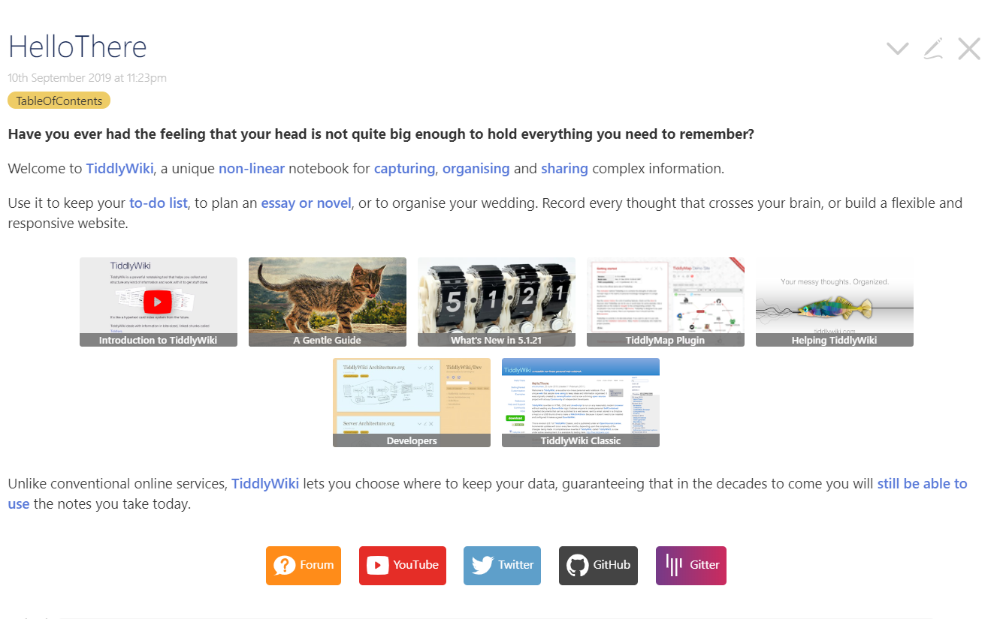
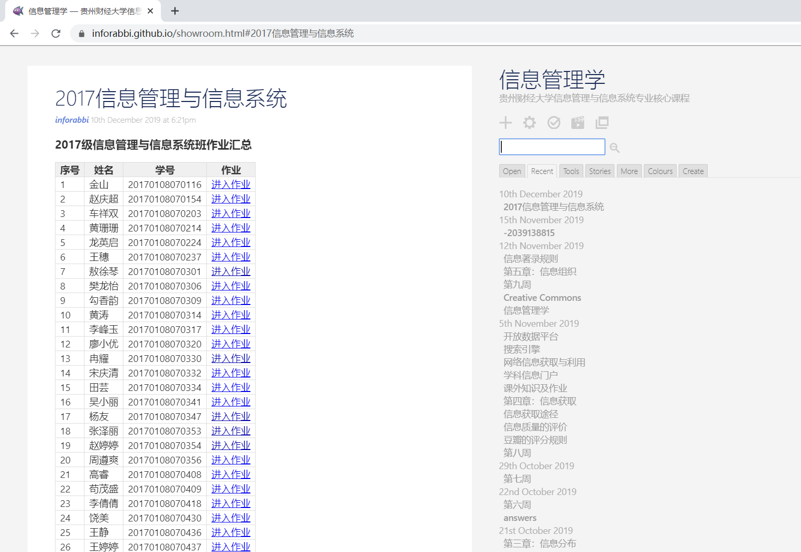
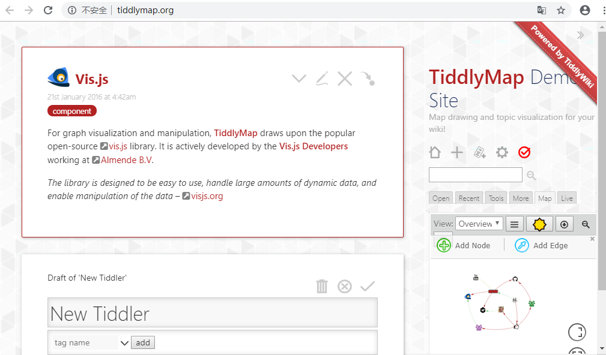
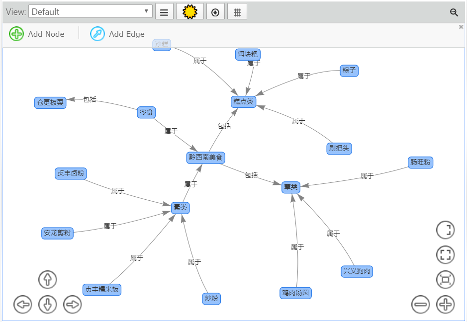

- 
你是否曾有过这样的感觉，你的脑袋不够大，不能容纳你需要记住的一切？ 欢迎来到TiddlyWiki，这是一款独特的非线性笔记本，用于捕获、组织和分享复杂信息。 可用它来保存你的待办事项列表，计划一篇文章或小说，或安排你的婚礼。记录闪过你大脑的每一个想法，或者建立一个灵动的自适应式的网站。与传统的在线服务不同，TiddlyWiki让您可以选择在哪里保存你的数据，保证在未来几十年，您仍然可以使用今天所做的。
点击详情>> - 
Tiddlywiki 是一个非线形的个人笔记工具，所有的内容都保存在一个 HTML 文件内。单文件既能够直接保存在本地，又可以方便地上传服务器。信息管理学老师要求我们班全部的作业都要在其中完成，并且上传到github保存，大家都可以互相学习，我负责全班的汇总工作。我们通过它来分享我们学习的知识，同时也有很好的储存管理方法，通过学习，了解如何使用tiddlywiki这个工具，对文字，图片，音频，视频等信息进行有效的管理。
点击详情>> - 
TiddlyMap 严格来说不是一个纯正的思维导图工具，但具备脑图的功能。它基于 TiddlyWiki 构建，允许直观地链接和创建 wiki 主题，可以将个人笔记以维基概念图混合版本的形式转化为软件。
点击详情>> - 
知识图谱之tiddlymap,使用tiddlymap来对家乡的美食做一个简单的管理，找出它们的联系，我的家乡是黔西南布依族苗族自治州，其中最为出名的当属贞丰糯米饭和粽子。我根据它们的制作方式，对当地美食做简单的分类。
点击详情>>